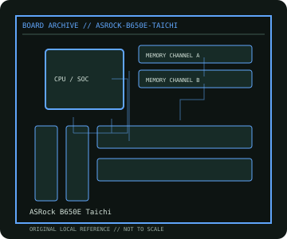

[ INDIVIDUAL COMPONENT // MOTHERBOARDS ]
ASRock B650E Taichi
AMD AM5 B650E enthusiast desktop platform, 2022. This record documents the named model and its documented variants; confirm the PCB revision, submodel and firmware on the physical unit.

REVISION WARNING: Similar model names and PCB revisions may have different processors, connectors or firmware. Read the silkscreen and assembly code; use the support files for that exact board variant.
Specifications
| Catalog subcategory | Modern AMD platforms |
|---|---|
| Exact model / era | ASRock B650E Taichi — AMD AM5 B650E enthusiast desktop platform, 2022 |
| CPU and socket / SoC | Socket AM5 Ryzen 7000/8000/9000 series per ASRock CPU support list and BIOS |
| Chipset / platform | AMD B650E |
| Memory | Four DDR5 DIMM slots, dual-channel, up to 128 GB per published model specification; CPU/QVL determines supported speeds |
| Slots and connectivity | E-ATX; PCIe 5.0 x16 primary, PCIe 4.0 x16-length secondary, three M.2 sockets including PCIe 5.0 storage, four SATA 6 Gb/s, dual 2.5GbE, Wi-Fi 6E |
| Firmware | ASRock UEFI with BIOS Flashback; B650E Taichi is distinct from Taichi Lite and Carrara. Confirm CPU support and PCB marking. |
Compatibility and revision notes
AM5 is LGA and uses DDR5. PCIe 5.0 device/slot support and lane sharing depend on CPU and slot population; use the manual's DIMM and M.2 map.
Socket, connector shape and family branding alone do not establish compatibility. Verify the exact processor list, minimum BIOS, memory population table, power input, dimensions, and shared-lane behavior in the cited manual before installation.
Preservation and repair
Inspect socket pins under magnification and verify AM5 frame/retention pressure. Check M.2 thermal plate contact and Wi-Fi antenna leads; preserve BIOS/EXPO settings before firmware updates.
For archival preservation, photograph the PCB, labels, connectors and included accessories before cleaning. Record serial/date codes, firmware versions, known faults, prior repairs and test conditions; use ESD-safe handling and do not power a board with loose conductive hardware beneath it.
Sources & further reading
- ASRock B650E Taichi — product/manual referenceModel-specific platform, board layout and interface reference.
- ASRock B650E Taichi — support and firmware resourcesSupport documentation; match the PCB revision, CPU support list and firmware release to the physical board.
Manufacturer/model documentation is the primary reference. Where vendor support is archived, match its revision notes to the board and do not cross-flash firmware from a similar product.